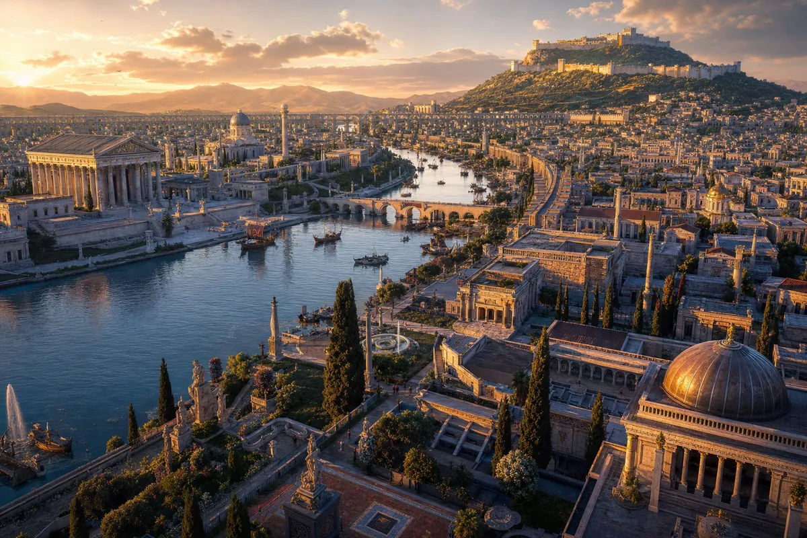
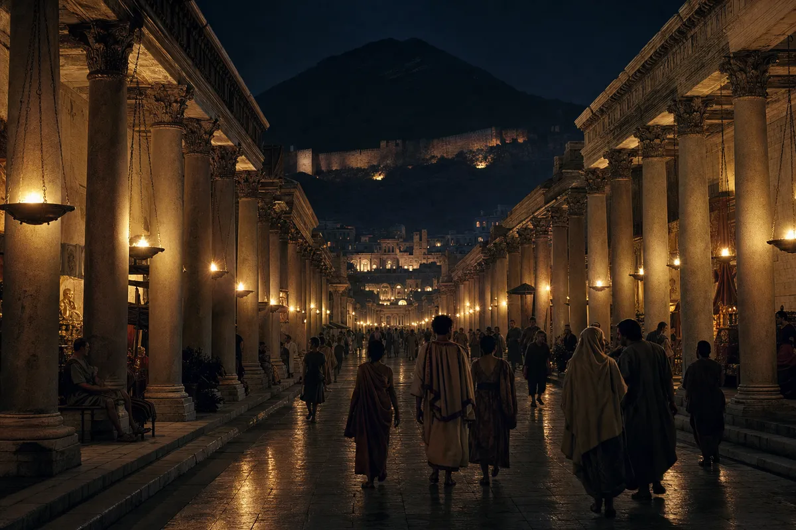
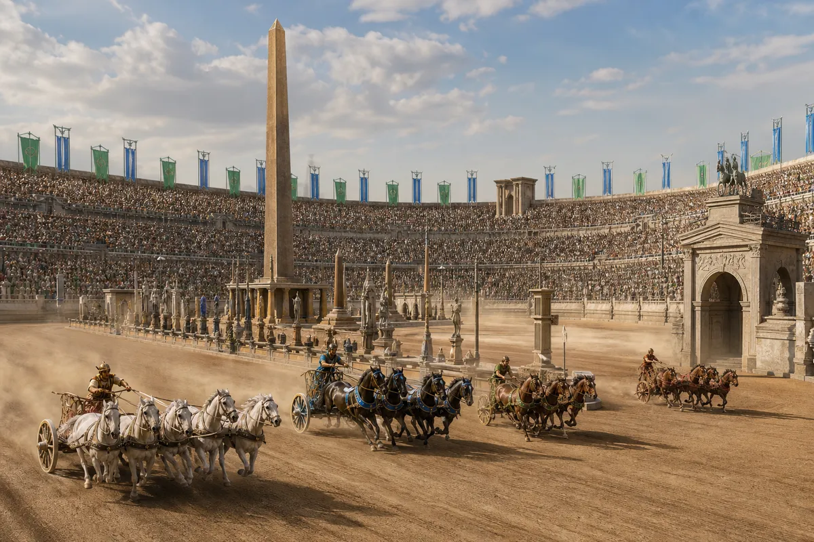
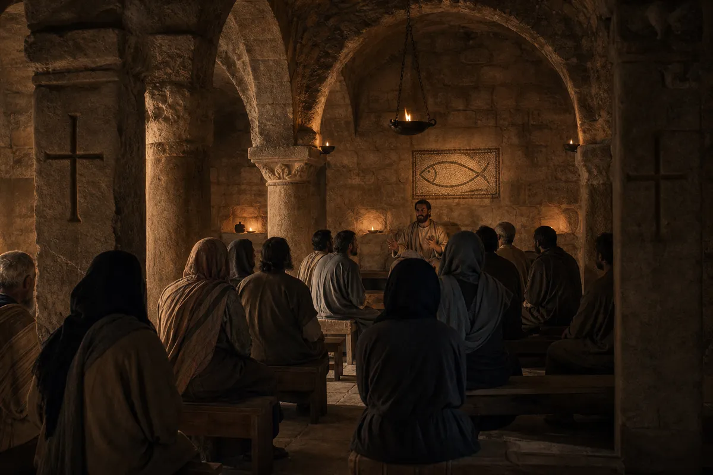
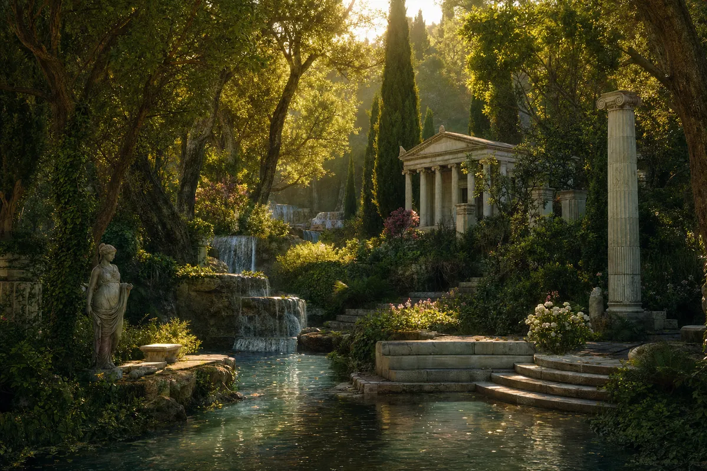
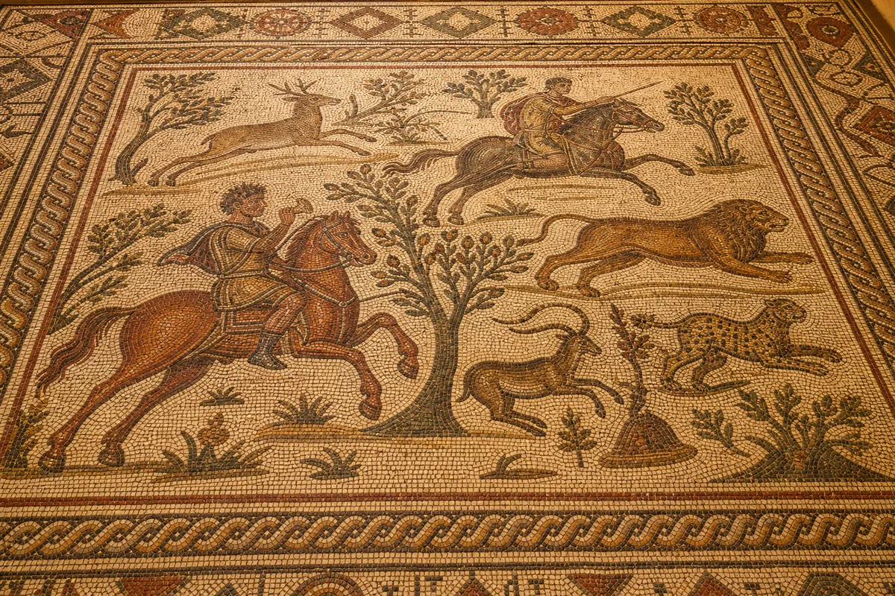

The great east-west avenue — two miles of marble columns, covered walkways, and shops selling everything the ancient world could carry. The first street in history lit at night. The lamps burned oil from Syria. The light reached Rome.

Eighty thousand seats. Four factions. The chariot races of Antioch were more than sport — they were politics, religion, and war compressed into seven laps. The Blues and Greens burned the city twice. They rebuilt it twice. The horses didn't care.

Acts 11:26. The name was born in this city. Peter came here before Rome. Paul started here before everywhere. The first church was not grand — stone, oil lamps, and the word. The faith was new. The walls were old. The combination changed the world.

Five miles south of the city — the sacred grove. Laurel trees, cypress, natural springs cascading into marble pools. A temple to Apollo. The most beautiful garden in the ancient world. Julian the Apostate came to sacrifice. The oracle said: the springs are polluted. Julian burned. The springs kept flowing.

The mosaics of Antioch — the finest the ancient world produced. Hunting scenes, mythological tableaux, geometric patterns that would take a mathematician to decode. Each stone placed by hand. Each scene a world. They're in museums now. The floors remember feet.

The great wall of Antioch ran up and over Mount Silpius — an engineering feat that awed Rome. The citadel at the top watched four empires come and go. The mountain shook in 115 AD, 526 AD, 528 AD. Each time Antioch fell. Each time Antioch rebuilt. The mountain shrugged.
The Orontes — not the longest river, not the deepest, but the one that fed a great city. The island in the river held the royal palace. Four bridges connected four quarters. Greek, Syrian, Jewish, Roman — each quarter kept its language. The river heard them all.
Not as famous as Alexandria. That's what saved it — for a while. The scholars of Antioch preserved Greek philosophy, Syrian astronomy, and the first Christian theology in the same building. Libanius taught rhetoric here. John Chrysostom preached here. The words survived the earthquakes. Words usually do.
The gate through which empires entered: Persians, Arabs, Crusaders, Mongols, Ottomans. Each one opened the Iron Gate. Each one thought they were the last. The gate is still there. It has seen more conquerors than any door in history. It creaks the same for all of them.
"The city fell seven times.
Earthquakes. Persians. Crusaders. Time.
Seven times it stood back up.
The eighth time it simply changed its name.
The bread is still warm.
The Orontes still flows.
The name — Christian — was born here.
Not in Rome. Not in Jerusalem.
Here. In a street lit by oil lamps.
Where strangers heard the word
and gave it a name."
— The Orontes Remembers, verse XXXI